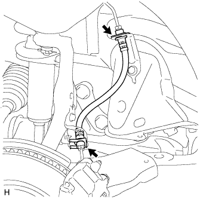

ГИБКИЙ ШЛАНГ ПЕРЕДНЕГО ТОРМОЗА > СНЯТИЕ |
| 1. СНИМИТЕ ПЕРЕДНЕЕ КОЛЕСО |
| 2. СЛЕЙТЕ ТОРМОЗНУЮ ЖИДКОСТЬ |
| 3. СНИМИТЕ ГИБКИЙ ШЛАНГ ПЕРЕДНЕГО ТОРМОЗА |
|  |
Снимите 2 фиксатора.
Отсоедините трубопровод тормозной системы от переднего гибкого шланга с помощью разрезной головки, удерживая передний гибкий шланг гаечным ключом, и снимите передний гибкий шланг.